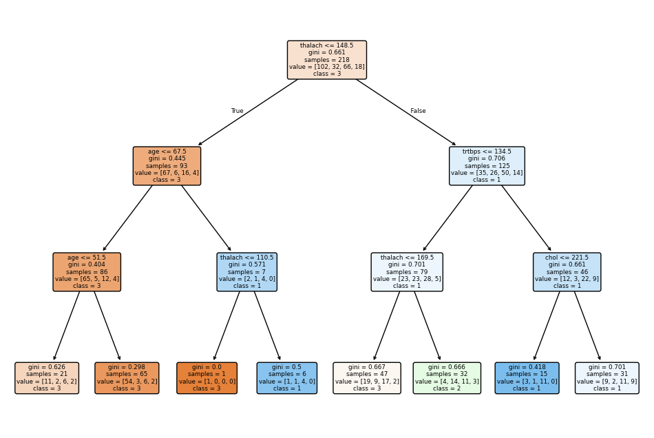
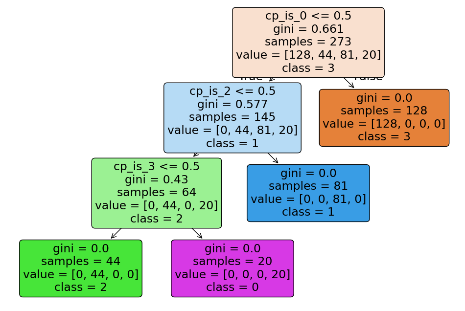

import pandas as pd
from sklearn.pipeline import Pipeline
from sklearn.neighbors import KNeighborsClassifier
from sklearn.tree import DecisionTreeClassifier, plot_tree
from sklearn.discriminant_analysis import LinearDiscriminantAnalysis
from sklearn.model_selection import train_test_split, cross_val_predict, StratifiedKFold
from sklearn.linear_model import LogisticRegression
from sklearn.metrics import f1_score, classification_report, roc_auc_score
import pandas as pd
import matplotlib.pyplot as plt
import warnings
from sklearn.exceptions import ConvergenceWarning
# Suppress all ConvergenceWarning warnings
warnings.filterwarnings("ignore", category=ConvergenceWarning)Our dataset consists of clinical data from patients who entered the hospital complaining of chest pain (“angina”) during exercise. The information collected includes:
age: Age of the patientsex: Sex of the patientcp: Chest Pain type- Value 0: asymptomatic
- Value 1: typical angina
- Value 2: atypical angina
- Value 3: non-anginal pain
trtbps: resting blood pressure (in mm Hg)chol: cholesterol in mg/dl fetched via BMI sensorrestecg: resting electrocardiographic results- Value 0: normal
- Value 1: having ST-T wave abnormality (T wave inversions and/or ST elevation or depression of > 0.05 mV)
- Value 2: showing probable or definite left ventricular hypertrophy by Estes’ criteria
thalach: maximum heart rate achieved during exerciseoutput: the doctor’s diagnosis of whether the patient is at risk for a heart attack- 0 = not at risk of heart attack
- 1 = at risk of heart attack
ha = pd.read_csv("https://www.dropbox.com/s/aohbr6yb9ifmc8w/heart_attack.csv?dl=1")Q1: Natural Multiclass Models
Fit a multiclass KNN, Decision Tree, and LDA for the heart disease data; this time predicting the type of chest pain (categories 0 - 3) that a patient experiences. For the decision tree, plot the fitted tree, and interpret the first couple splits.
# Prepare the data
X = ha.drop(columns=['output', 'cp'])
y = ha['cp']
X_train, X_test, y_train, y_test = train_test_split(X, y, test_size=0.2, random_state=42)
# KNN
knn = KNeighborsClassifier()
knn.fit(X_train, y_train)
# Decision Tree
dt = DecisionTreeClassifier(max_depth=3) # Limiting depth for better visualization
dt.fit(X_train, y_train)
# LDA
lda = LinearDiscriminantAnalysis()
lda.fit(X_train, y_train)
# Plot the decision tree
plt.figure(figsize=(12, 8))
plot_tree(dt, feature_names=X.columns, class_names=y.unique().astype(str), filled=True, rounded=True)
plt.show()
# Interpretation of the first splits (example):
# The first split is based on the 'thalach' feature. If 'thalach' <= 133.5,
# then the model predicts that the chest pain type is more likely to be 0 or 2, otherwise
# it moves down the tree to consider another feature.
# The second split further divides those data points into more specific groups based on 'age'.
# The exact interpretation will depend on the generated plot.

from sklearn.model_selection import cross_val_score, StratifiedKFold
from sklearn.neighbors import KNeighborsClassifier
from sklearn.tree import DecisionTreeClassifier, plot_tree
from sklearn.discriminant_analysis import LinearDiscriminantAnalysis
import matplotlib.pyplot as plt
# Prepare the data
X = ha.drop(columns=['output', 'cp'])
y = ha['cp']
# KNN
knn = KNeighborsClassifier()
knn_scores = cross_val_score(knn, X, y, cv=5, scoring='accuracy')
print(f"KNN Accuracy (mean): {knn_scores.mean():.3f}, Std: {knn_scores.std():.3f}")
# Decision Tree
dt = DecisionTreeClassifier(max_depth=3) # Limiting depth for better visualization
dt_scores = cross_val_score(dt, X, y, cv=5, scoring='accuracy')
print(f"Decision Tree Accuracy (mean): {dt_scores.mean():.3f}, Std: {dt_scores.std():.3f}")
# Train the decision tree on the entire dataset for visualization
dt.fit(X, y)
plt.figure(figsize=(12, 8))
plot_tree(dt, feature_names=X.columns, class_names=y.unique().astype(str), filled=True, rounded=True)
plt.show()
# LDA
lda = LinearDiscriminantAnalysis()
lda_scores = cross_val_score(lda, X, y, cv=5, scoring='accuracy')
print(f"LDA Accuracy (mean): {lda_scores.mean():.3f}, Std: {lda_scores.std():.3f}")KNN Accuracy (mean): 0.451, Std: 0.070
Decision Tree Accuracy (mean): 1.000, Std: 0.000
LDA Accuracy (mean): 0.465, Std: 0.088Q2: OvR
Create a new column in the ha dataset called cp_is_3, which is equal to 1 if the cp variable is equal to 3 and 0 otherwise.
Then, fit a Logistic Regression to predict this new target, and report the F1 Score.
Repeat for the other three cp categories. Which category was the OvR approach best at distinguishing?
# Create new target variables for one-vs-rest (OvR) classification
for i in range(4):
ha[f'cp_is_{i}'] = (ha['cp'] == i).astype(int)
results = {}
for i in range(4):
# Prepare the data
X = ha.drop(columns=['output', 'cp', 'cp_is_0', 'cp_is_1', 'cp_is_2', 'cp_is_3'])
y = ha[f'cp_is_{i}']
# Fit Logistic Regression with cross-validation
logreg = LogisticRegression()
y_pred = cross_val_predict(logreg, X, y, cv=5) # Generate cross-validated predictions
# Classification Report
print(f"Classification Report for cp_is_{i}:\n{classification_report(y, y_pred)}")
# Calculate F1 Score
f1 = f1_score(y, y_pred)
results[i] = f1
print(f"F1 Score for cp_is_{i}: {f1}\n")
# Identify the best-performing category
best_category = max(results, key=results.get)
print(f"\nThe OvR approach was best at distinguishing cp category {best_category} with an F1 score of {results[best_category]:.3f}.")Classification Report for cp_is_0:
precision recall f1-score support
0 0.65 0.72 0.68 145
1 0.64 0.56 0.60 128
accuracy 0.64 273
macro avg 0.64 0.64 0.64 273
weighted avg 0.64 0.64 0.64 273
F1 Score for cp_is_0: 0.5975103734439834
Classification Report for cp_is_1:
precision recall f1-score support
0 0.84 0.99 0.91 229
1 0.00 0.00 0.00 44
accuracy 0.83 273
macro avg 0.42 0.50 0.45 273
weighted avg 0.70 0.83 0.76 273
F1 Score for cp_is_1: 0.0
Classification Report for cp_is_2:
precision recall f1-score support
0 0.69 0.90 0.78 192
1 0.17 0.05 0.08 81
accuracy 0.65 273
macro avg 0.43 0.48 0.43 273
weighted avg 0.54 0.65 0.57 273
F1 Score for cp_is_2: 0.07692307692307693
Classification Report for cp_is_3:
precision recall f1-score support
0 0.93 1.00 0.96 253
1 0.00 0.00 0.00 20
accuracy 0.92 273
macro avg 0.46 0.50 0.48 273
weighted avg 0.86 0.92 0.89 273
F1 Score for cp_is_3: 0.0
The OvR approach was best at distinguishing cp category 0 with an F1 score of 0.598.Q3: OvO
Reduce your dataset to only the 0 and 1 types of chest pain.
Then, fit a Logistic Regression to predict between the two groups, and report the ROC-AUC.
Repeat comparing category 0 to 2 and 3. Which pair was the OvO approach best at distinguishing?
# Function to perform OvO logistic regression with cross-validation and return ROC-AUC
def ovo_logreg_cv(df, cp1, cp2, cv=5):
# Subset the data for the two classes being compared
subset = df[df['cp'].isin([cp1, cp2])]
X = subset.drop(columns=['output', 'cp', 'cp_is_0', 'cp_is_1', 'cp_is_2', 'cp_is_3'])
y = (subset['cp'] == cp2).astype(int) # Binary target: 1 if cp == cp2, 0 otherwise
# Logistic Regression with cross-validation
logreg = LogisticRegression()
y_pred = cross_val_predict(logreg, X, y, cv=5)
# Compute ROC-AUC
roc_auc = roc_auc_score(y, y_pred)
return roc_auc
# Compare category 0 to 1, 0 to 2, and 0 to 3 using cross-validation
roc_auc_01 = ovo_logreg_cv(ha, 0, 1, cv=5)
roc_auc_02 = ovo_logreg_cv(ha, 0, 2, cv=5)
roc_auc_03 = ovo_logreg_cv(ha, 0, 3, cv=5)
print(f"ROC-AUC for cp 0 vs 1: {roc_auc_01:.3f}")
print(f"ROC-AUC for cp 0 vs 2: {roc_auc_02:.3f}")
print(f"ROC-AUC for cp 0 vs 3: {roc_auc_03:.3f}")
# Determine the best-performing pair
results_ovo = {
"0 vs 1": roc_auc_01,
"0 vs 2": roc_auc_02,
"0 vs 3": roc_auc_03
}
best_pair_ovo = max(results_ovo, key=results_ovo.get)
print(f"\nThe OvO approach was best at distinguishing {best_pair_ovo} with an ROC-AUC of {results_ovo[best_pair_ovo]:.3f}.")ROC-AUC for cp 0 vs 1: 0.624
ROC-AUC for cp 0 vs 2: 0.572
ROC-AUC for cp 0 vs 3: 0.477
The OvO approach was best at distinguishing 0 vs 1 with an ROC-AUC of 0.624.